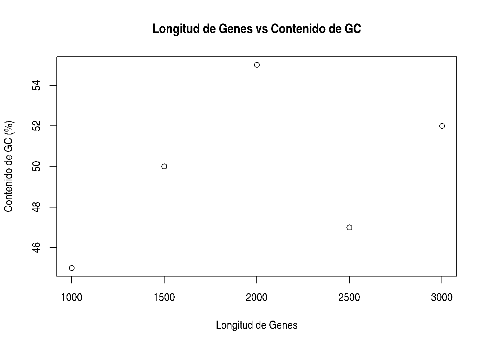
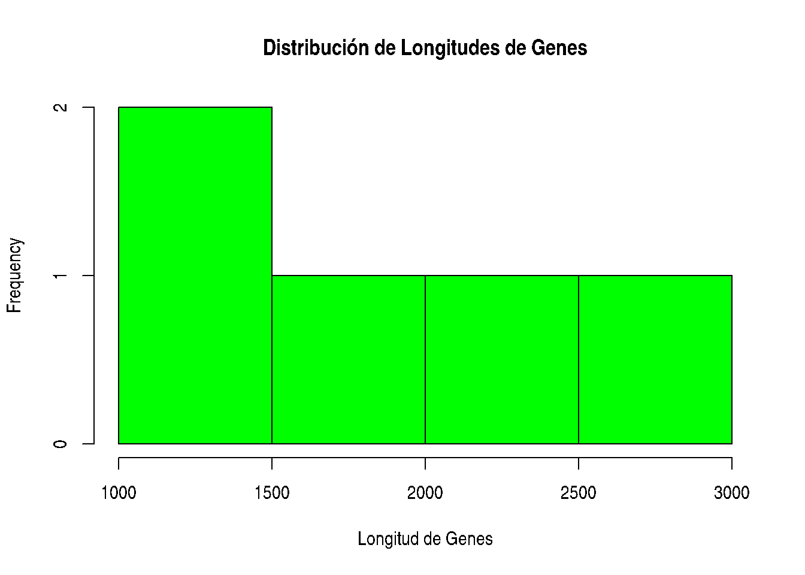
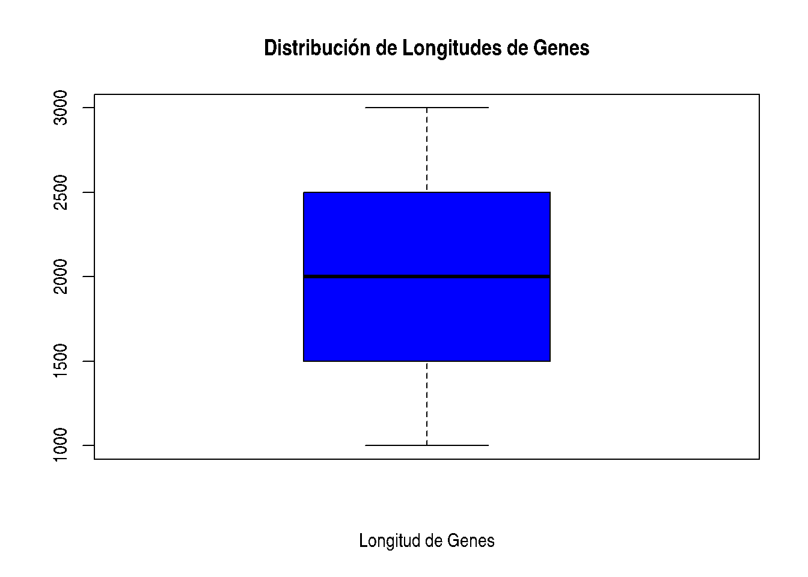
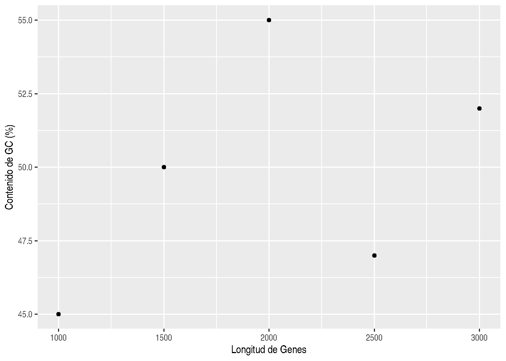
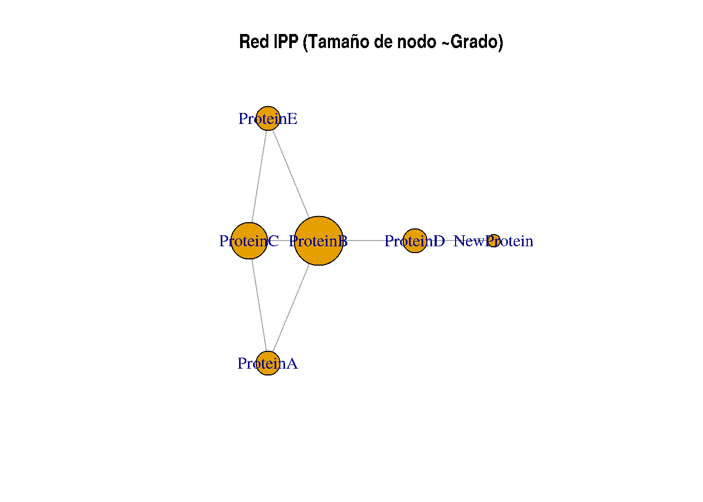
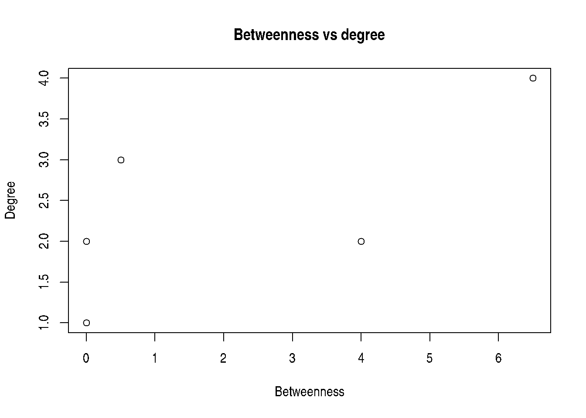

1(Re)introducción a R para Biología y Bioinformática
Bienvenidos a la Reintroducción a R. En esta sesión de una hora, aprendereis y os recordaremos los conceptos básicos de la programación en R con ejemplos relacionados con la biología y la bioinformática, incluyendo una introducción al análisis de redes usando igraph.
1.1 Objetivos
Al final de este tutorial, podrás:
Entender la sintaxis básica y la estructura de R.
Realizar operaciones simples con datos.
Crear gráficos básicos relevantes para la biología y la bioinformática.
Entender los conceptos básicos del análisis de redes con igraph.
1.2 Comenzando
R es un lenguaje poderoso para la computación estadística y gráfica, ampliamente utilizado en bioinformática. Para empezar a usar R, necesitas tener R y RStudio instalados en tu ordenador. Puedes descargarlos desde los siguientes enlaces: - Descargar R - Descargar RStudio
1.3 Sintaxis Básica
Comencemos con algunos comandos y operaciones básicas en R. Abre RStudio y prueba los siguientes ejemplos.
1.3.1 Asignación de Variables
En R, puedes asignar valores a variables utilizando el operador <-. Una variable es una forma de almacenar información que puedes usar y manipular más adelante.
# Asignar longitudes de secuencias de ADN a variableslength_gene1 <-1500length_gene2 <-1200# Imprimir las variableslength_gene1
[1] 1500
length_gene2
[1] 1200
# Realizar operaciones con variablestotal_length <- length_gene1 + length_gene2total_length
[1] 2700
1.3.2 Tipos de Datos
R tiene varios tipos de datos, incluyendo numéricos (números), caracteres (texto) y lógicos (VERDADERO/FALSO).
El contenido de GC se refiere al porcentaje de bases nitrogenadas guanina (G) y citosina (C) en una molécula de ADN. Es una medida importante porque:
Estabilidad del ADN: Las regiones del ADN con alto contenido de GC son más estables debido al triple enlace de hidrógeno entre G y C, en comparación con el doble enlace de A y T.
Evolución y Adaptación: Las diferencias en el contenido de GC pueden reflejar adaptaciones evolutivas a diferentes temperaturas ambientales, ya que las regiones con alto GC pueden ser más resistentes al calor.
Función Genómica: Algunas regiones funcionales del genoma, como los promotores de genes y las islas CpG, tienden a tener un alto contenido de GC, lo cual es crucial para la regulación genética.
# Calcular el contenido de GC de una secuencia de ADN g <-200c <-180a <-150t <-170# Número total de nucleótidos total_nt <- g + c + a + t # Porcentaje de contenido de GC gc_content <- ((g + c) / total_nt) *100gc_content
[1] 54.28571
# Algunas operaciones extras son# la raizsqrt(4)
[1] 2
# la exponencialexp(2)
[1] 7.389056
# elevar con una potencia2^3
[1] 8
sqrt(4)^2
[1] 4
1.4 Estructuras de Datos Básicas
R proporciona varias estructuras de datos como vectores, matrices, listas y data frames. Vamos a explorar algunas de estas.
1.4.1 Vectores
Los vectores son la estructura de datos más básica en R y pueden contener una secuencia de elementos del mismo tipo.
# Crear un vector numérico de longitudes de genesgene_lengths <-c(1000, 1500, 2000, 2500, 3000)gene_lengths
[1] 1000 1500 2000 2500 3000
# Crear un vector de caracteres de nombres de genesgene_names <-c("GeneA", "GeneB", "GeneC", "GeneD", "GeneE")gene_names
[1] "GeneA" "GeneB" "GeneC" "GeneD" "GeneE"
# Algunas operaciones básicas con ellos1+3* gene_lengths
[1] 3001 4501 6001 7501 9001
length(gene_lengths)
[1] 5
# Extraer datos de vectorgene_lengths[3]
[1] 2000
gene_lengths[2:5]
[1] 1500 2000 2500 3000
gene_lengths[c(2,5)]
[1] 1500 3000
1.4.2 Data Frames
Los data frames se utilizan para almacenar datos tabulares. Piensa en un data frame como una tabla donde cada columna puede contener diferentes tipos de datos (numéricos, caracteres, etc.).
# Crear un data frame con información de genesgenes_df <-data.frame(Name = gene_names,Length = gene_lengths,GC_Content =c(45, 50, 55, 47, 52))genes_df
# obtener algunas metricas sobre el dataframedim(genes_df)
[1] 5 3
summary(genes_df)
Name Length GC_Content
Length:5 Min. :1000 Min. :45.0
Class :character 1st Qu.:1500 1st Qu.:47.0
Mode :character Median :2000 Median :50.0
Mean :2000 Mean :49.8
3rd Qu.:2500 3rd Qu.:52.0
Max. :3000 Max. :55.0
1.5 Control de flujo
1.5.1 Reailzar tareas de forma iterativa
En ocasiones queremos llevar a cabo una misma tarea para distintos elementos de una lista, vector… o demás objetos iterables.
dna <-"atcccgaggtagcgagcgtgca"dna_vector <-strsplit(dna, "")[[1]]for (nucl in dna_vector) {print(nucl)}
[1] "a"
[1] "t"
[1] "c"
[1] "c"
[1] "c"
[1] "g"
[1] "a"
[1] "g"
[1] "g"
[1] "t"
[1] "a"
[1] "g"
[1] "c"
[1] "g"
[1] "a"
[1] "g"
[1] "c"
[1] "g"
[1] "t"
[1] "g"
[1] "c"
[1] "a"
1.5.2 Adición de condicionales
Si en el flujo de trabajo queremos controlar lo que se haga según las circunstancias podemos utilizar lo siguiente.
R es bien conocido por sus potentes capacidades de graficado. Aquí, crearemos un gráfico simple usando la función incorporada plot.
1.6.1 Gráfico de Dispersión
# Gráfico de dispersión básico de longitudes de genes vs contenido de GCplot(genes_df$Length, genes_df$GC_Content, main="Longitud de Genes vs Contenido de GC", xlab="Longitud de Genes", ylab="Contenido de GC (%)")

1.6.2 Histograma
# Histograma básico de longitudes de geneshist(genes_df$Length, main="Distribución de Longitudes de Genes", xlab="Longitud de Genes", col="green", border="black")

1.6.3 Boxplot
# Boxplot básico de longitudes de genes boxplot(genes_df$Length, main="Distribución de Longitudes de Genes", xlab="Longitud de Genes", col="blue", border="black")

1.6.4 Visualización de gráficas avanzada con ggplot2
ggplot(genes_df, aes(x=Length, y=GC_Content)) +geom_point() +xlab("Longitud de Genes") +ylab("Contenido de GC (%)")

1.7 Introducción al Análisis de Redes con igraph
El análisis de redes es un aspecto crucial de la bioinformática, especialmente en la comprensión de vías e interacciones biológicas. El paquete igraph en R es una herramienta poderosa para crear y analizar grafos.
1.7.1 Instalación y Carga de igraph
Primero, necesitas cargar el paquete igraph.
¿Qué es un Paquete en R? En R, un paquete es una colección de funciones, datos y código que extienden las capacidades básicas del lenguaje. Los paquetes son creados por la comunidad de R y están diseñados para abordar tareas específicas, desde análisis estadísticos avanzados hasta visualización de datos y manejo de datos biológicos. Los paquetes facilitan el trabajo con R al proporcionar herramientas adicionales que puedes usar en tus scripts y análisis.
Instalación y Carga de Paquetes Para utilizar un paquete en R, primero necesitas instalarlo (si no está ya instalado) y luego cargarlo en tu sesión de R.
Instalación de Paquetes Puedes instalar un paquete desde CRAN (Comprehensive R Archive Network) utilizando la función install.packages():
Ahora vamos a cargar un paquee que ya esta instalado, usando el comando library()
# Cargar paquete igraphlibrary(igraph)
Attaching package: 'igraph'
The following objects are masked from 'package:stats':
decompose, spectrum
The following object is masked from 'package:base':
union
1.7.2 Creación de una Red Simple
Representar proteínas en un formato de red puede ser útil por varias razones:
Visualización de Interacciones: Permite ver cómo las proteínas interactúan entre sí y formar una visión general de las redes de interacción.
Identificación de Proteínas Clave: Ayuda a identificar proteínas que tienen un papel central o que son esenciales en la red.
Análisis de Funciones Biológicas: Facilita la comprensión de las funciones biológicas y cómo las alteraciones en una proteína pueden afectar toda la red.
Vamos a crear una red simple de interacciones proteína-proteína.
# Definir aristas (interacciones) entre proteínasedges <-c("ProteinA", "ProteinB","ProteinA", "ProteinC","ProteinB", "ProteinC","ProteinB", "ProteinD","ProteinB", "ProteinE","ProteinC", "ProteinE")# Crear un objeto de grafog <-graph(edges, directed=FALSE)
Warning: `graph()` was deprecated in igraph 2.1.0.
ℹ Please use `make_graph()` instead.
# Graficar el grafo con tamaños de nodo proporcionales a su gradoplot(g, vertex.size=degree(g)*10, vertex.label=V(g)$name, main="Red IPP (Tamaño de nodo ~Grado)")

hist(degree(g), main="Distribución del grado de los nodos", xlab="", col="blue", border="black")
plot(betweenness(g), degree(g), main="Betweenness vs degree", xlab="Betweenness", ylab="Degree")

1.7.4 Otro ejemplo de red
graph_example <-make_graph("Zachary")# Se puede establecer el tipo de layout que quieres...layout_with_kk, layout_in_circle,...layout <-layout_with_fr(graph_example)plot(graph_example, layout = layout, vertex.size =20, vertex.label =NA, vertex.color ="skyblue", edge.arrow.size =0.5, edge.color ="gray")
Ahora has sido introducido a los conceptos básicos de la programación en R con ejemplos relevantes para la biología y la bioinformática. Hemos cubierto operaciones aritméticas básicas, asignación de variables, tipos de datos, estructuras de datos, graficación simple y una introducción al análisis de redes con igraph. Continúa practicando para familiarizarte más con R y explora temas más avanzados a medida que progresas.